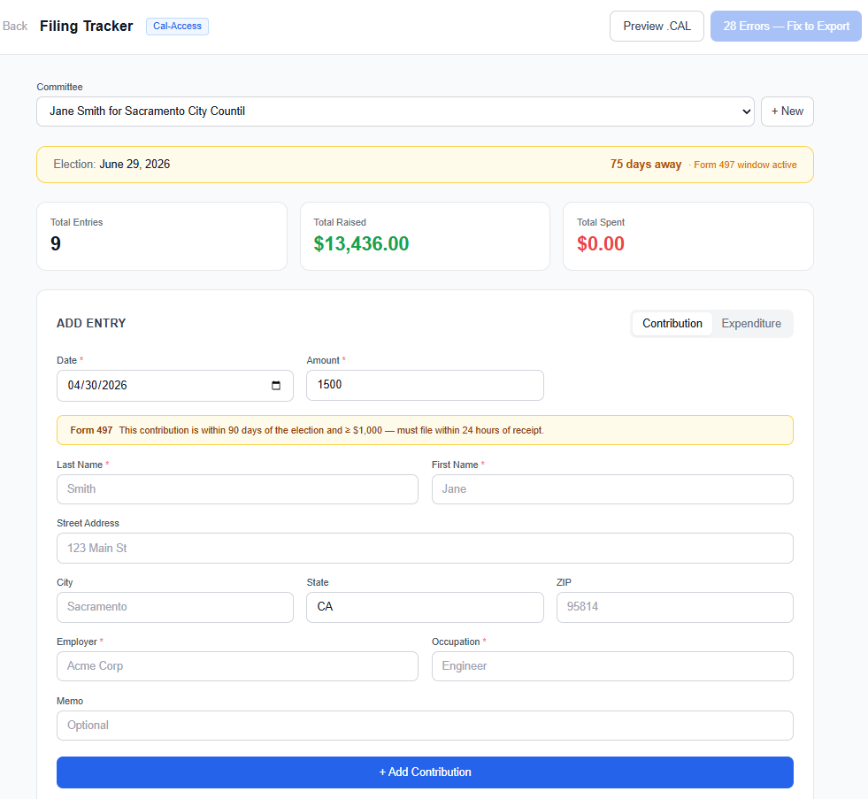

BallotBase started as an analytics platform — a way to understand what the data inside FEC and Cal-Access actually means. Who your donors are. How your spending compares. Where your money is coming from.
That is still the core. But there is another side of campaign finance that nobody has solved well, and it is the one that actually keeps treasurers up at night.
Filing correctly. On time. With nothing missing.
The Problem with Filing
California FPPC compliance is not complicated in theory. Log your contributions. Log your expenditures. File on time. But in practice, there are enough rules, thresholds, and deadlines layered on top of each other that doing it manually is genuinely error-prone.
The threshold rules alone create constant friction. Contributions of $100 or more require employer and occupation. Contributions of $1,000 or more within 90 days of an election trigger Form 497, which must be filed within 24 hours of receipt. Independent expenditures in that same window trigger Form 496. And none of this is surfaced automatically in any existing tool — treasurers either know the rules cold, or they find out they missed something after the fact.
The cost of getting it wrong is real. FPPC fines are not trivial. Late filings become public record. And for smaller campaigns without professional compliance support, there is no safety net. You either know the rules or you do not.
What We Built
The BallotBase Filing Tracker is a California-first compliance layer built directly into the platform. It is not a generic spreadsheet with some formulas. It is a system that actually understands what the FPPC requires, applied in real time as you log transactions.

Here is what it does:
Automatic form assignment. Every transaction is classified automatically. A standard contribution in a non-election window goes on Form 460. A $1,500 contribution logged 60 days before the election gets flagged as a Form 497 trigger — and the system tells you the 24-hour filing clock has started. Each entry displays its form badge (F460, F497, F496) directly in the ledger so you always know what you are looking at.
Threshold-aware validation. The system knows that employer and occupation are only required for contributions of $100 or more. Below that threshold, the fields are optional and labeled as such. At $100 and above, they flip to required — and the form shows a red asterisk before you save, not after. The validation logic is running as you type, not at export time.
Inline compliance flags. Entries with missing required fields are highlighted directly in the transaction list — a red tint on the row and specific error labels underneath the entry name. You can see at a glance which records are incomplete. A compliance summary bar above the list shows the total error count, warning count, and any Form 497 triggers across all entries, so nothing hides in a long list.
Edit without losing your work. Every entry has an edit button that opens a pre-filled form. Fix the missing field, save, and the compliance flag clears immediately. No re-entry, no lost data. The workflow is: log fast, fill in what you have, come back and complete it later.
Export gated on compliance. The .CAL file export does not run until all required fields are present. If there are blocking errors, the export button relabels itself to show exactly how many records need attention. When everything is valid, you export and you are done — a properly formatted Cal-Access .CAL file, ready to submit.
Why We Designed It This Way
We thought a lot about whether to block entry entirely when required fields are missing. The answer is no, for a reason that matters in the real world.
Treasurers do not always have complete information at the moment of entry. You might receive a check at a fundraiser and not have the donor's employer on hand until you follow up later. Blocking the entry entirely would force you to either skip the record and risk forgetting it, or track it separately until you can come back. Neither is better than just logging what you have and completing it before export.
The system is designed to reflect how campaign finance actually works: fast intake, clean output. Log everything. Fix what is incomplete. Gate the export. That workflow maps directly to how a treasurer operates under real campaign pressure.
What Is Coming Next
This release covers the core Form 460 and Form 497 workflow for California recipient committees. That handles the majority of transactions a typical local or state campaign will log.
Next up is Form 496 for independent expenditures, loan handling, non-monetary contributions, and the pre-election reporting window logic that dynamically adjusts based on your election date. After that, we will expand to Form 461 for major donor committees and eventually add amendment support.
The longer-term goal is to make this the compliance layer for every state we support. California is the template. Nevada and Oregon are next.
Who This Is For
This is primarily built for California local campaigns — city council, county races, state legislative challengers — that do not have a dedicated compliance consultant and are managing their own filings. The candidates and treasurers who are doing this themselves, late at night, before a deadline, without a safety net.
If that is you, this is for you. And we want to hear exactly where it is falling short.
Running a California campaign and managing your own compliance? We want to show you what this looks like for your committee.
Get a Live Demo →